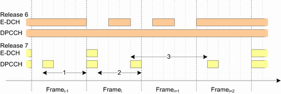
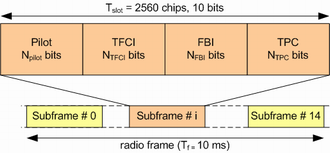

Continuous Packet Connectivity (CPC)
With a CPC, the UE is held online, so that the latencies occurred by a connection termination and reestablishment are avoided. To reduce the UE battery consumption when no user data are transferred, there is a bundle of features that support packet data users in an R7 HSPA+ network. With increased acceptance of packet data services, a high number of users are supported in a cell.
The main task of the CPC is to support control channels by reducing the control channel overhead for the following channels:
- Dedicated physical control channel (DPCCH) in the uplink
- High-speed dedicated physical control channel (HS-DPCCH) in the uplink
- High-Speed shared control channel (HS-SCCH) in the downlink
The next important task is to minimize the latency as perceived in HSPA CELL_DCH state, and to avoid the frequent connection termination and re-establishment.
The R&S CMW supports the following CPC features:
- UE uplink discontinuous transmission (DTX)
Uplink DPCCH is transmitted from time to time according to a known activity pattern. This regular activity is needed to maintain synchronization and power control loop. The UE DTX is only active if there is no uplink data transmission on E-DCH or HS-DPCCH.Two uplink DPCCH activity patterns are possible per UE:– UE DTX cycle 1
Used temporarily, after an inactivity threshold UE changes from cycle 1 to 2– UE DTX cycle 2
Allows you to transmit the uplink DPCCH less frequently than cycle 1
After the last uplink transmission on E-DCH, the UE waits for the duration of the "Inactivity Threshold" and then switches from UE DTX cycle 1 to the longer cycle 2. See the following figure.
Uplink DTX example, 2 ms TTI1 = DTX cycle 12 = inactivity threshold for DTX cycle 23 = DTX cycle 2
In normal signaling mode, the DTX mode is activated/deactivated automatically according to the settings. During reduced signaling is activated, use the "HS-SCCH Order" button to send the order type 0 manually. - UE downlink discontinuous reception (DRX)
DL DRX operation is only possible when the UL DTX operation is activated.
Network limits the number of HS-SCCH subframes to be monitored by the UE to reduce UE battery consumption. Parameter UE_DRX_cycle sets which HS-SCCH subframes the UE has to monitor. The DRX also defines the monitoring of E-RGCH and E-AGCH downlink control channels. In general, when UE uplink data transmission is ongoing or has stopped, the UE has to monitor these channels.
In normal signaling mode, the DRX mode is activated/deactivated automatically according to the settings. During reduced signaling is activated, use the "HS-SCCH Order" button to send the order type 0 manually. - E-DCH TX start time restrictions
UE is forced to transmit only on pre-defined time instants, due that a MAC DTX cycle and a MAC inactivity threshold are introduced. - HS-SCCH order type 0
The HS-SCCH order type 0 enables/disables discontinuous downlink reception, discontinuous uplink DPCCH transmission and HS-SCCH less operation. No HS-PDSCH is associated with HS-SCCH orders.
In normal signaling mode, the HS-SCCH order type 0 is sent automatically to the UE. During reduced signaling is activated, use the "HS-SCCH Order" button to send the order type 0 manually.
The "HS-SCCH Order" button is available only in reduced signaling mode. - HS-SCCH less operation
The HS-SCCH less operation reduces the HS-SCCH overhead and UE battery consumption. It is optimized for services with small packets, such as VoIP. The NodeB decides for each packet about applying HS-SCCH less operation.
During the HS-SCCH less operation, the transmission on HS-DSCH is done without an associated HS-SCCH, therefore UE does not monitor HS-SCCH in HS-SCCH less operation. The first NodeB - UE transmission always uses QPSK, one of four predefined transport formats and predefined channelization codes, so that the UE can blindly detect the correct format. First HS-PDSCH code to use is signaled.
If the packet is not received in the initial transmission, two retransmissions using HS-SCCH signaling are allowed in HS-SCCH less operation. After two unsuccessful retransmissions, higher layer mechanisms react. - New UL-DPCCH slot format
For the new UL-DPCCH slot format no. 4, see the table below. This slot format contains four transmit power control (TPC) bits in order to reduce DPCCH transmit power. Feedback information (FBI) and transport format combination indicator (TFCI) bits are not sent.